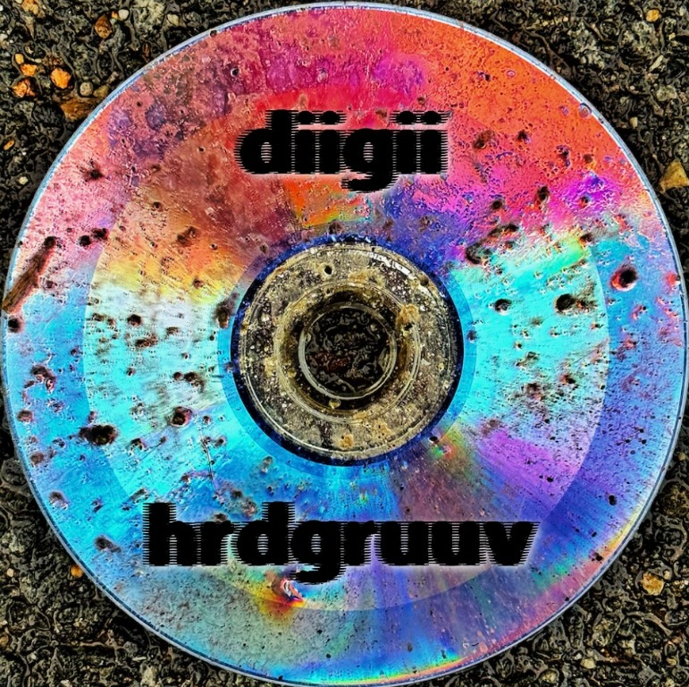
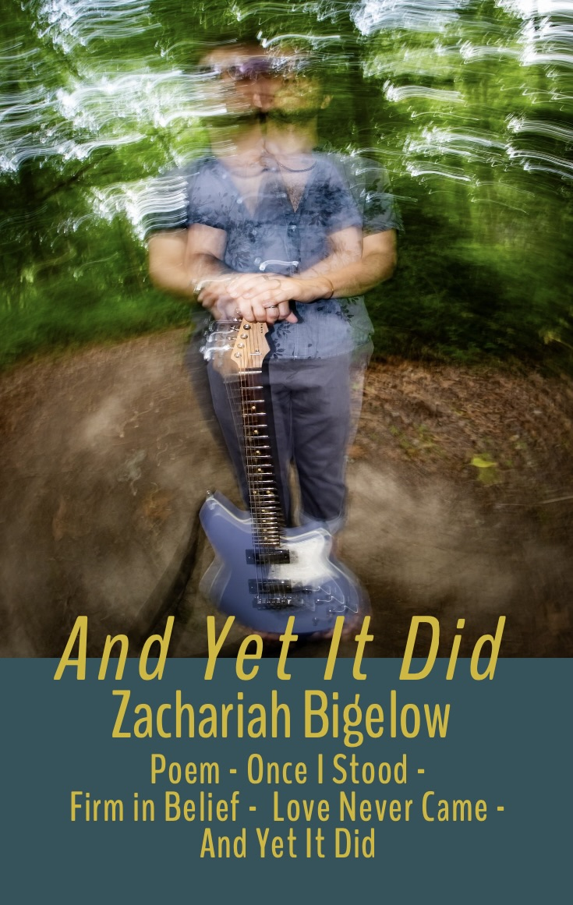
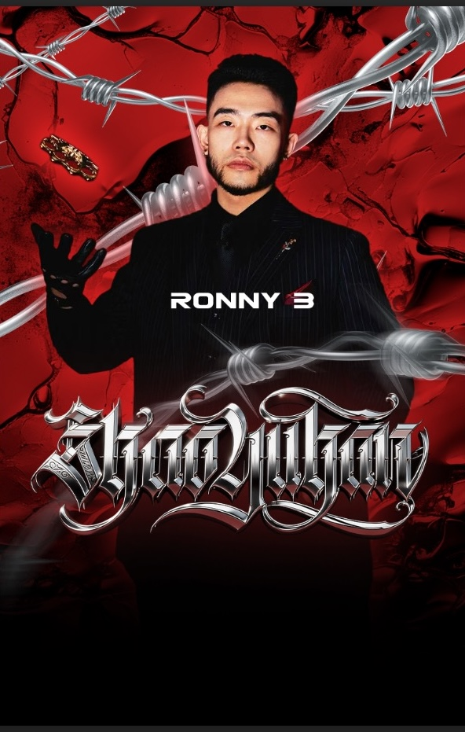

Music you can hold.
An invitation to slow down, listen together, and engage with popular music across genres and styles.

hrdgruuv
diigii
“I’m a wee lad and aspiring bedroom DJ from Jersey, bringing bouncy, groovy, high energy dance music to the table.
Healing and horseplay are the best ways to describe my artistic style when it comes to DJing. I love the spiritual, uplifting sounds of funky hardgroove techno and disco-house, and the unserious, absurd, and frantic pop-culture referential sounds of underground hard dance music.
hrdgruuv came to be through the butterfly effect of a local house DJ taking me under his wing and allowing me the platform to play my first live gig ever on his stage at Philadelphia House Music Festival in Fairmount Park in 2026. Without him, I probably wouldn’t be anywhere close to playing/recording/releasing sets. Shouts to Philly's own Cameron Kelly.
As far as my curation method, I search for the style of music I’m looking for on SoundCloud, find the most beefed-up playlist possible, and listen for only a few seconds. If the kick or the clap is good, I scrub a bit to the middle so I can hear more elements and decide if the sound matches the feeling I’m trying to convey. From there, I buy the track (don’t steal someone’s music for your sets) and deep dive into the artist’s catalog to expand on my music library.
Kwame Ocran has been a very good friend of mine for years now, with music being a defining factor in the fruitfulness of our friendship. He approached me with the opportunity to release my set on physical units. He saw and believed in me enough to take me on. I’m incredibly grateful for, and proud of Kwame, his LLC, everyone involved with it, and for allowing me the platform to be seen and heard, and making me believe I’m worth being seen and heard. I plan on sticking with PopMusicology as my primary source of physical media production and distribution for the foreseeable future.”
Follow diigii on Instagram: djdiigii

And Yet It Did
Zachariah Bigelow
“My name is Zachariah Henry Golden Bigelow and I have been playing music for over 20 years. My music career started at 15 years old when I got my first guitar and first guitar lesson. I was immediately hooked and fell in love with creating sounds. Over the course of those 20 years I have learned drums, bass, sax, piano, guitar and I have been consistently training my voice to become a better singer.
Musical inspirations for And Yet it Did come from Jeff Buckley and Queens of the Stone Age, primarily. I started the album with the song “Love Never Came”. I was in the basement of my old house just playing around, and then I stumbled on the chord progression. I started to develop it more and more until finally I wrote the whole song out. At that point I decided I was going to write an album surrounding my journey with self love. As a teenager, and throughout most of my 20s, I was severely depressed. So this album is a reflection of my journey of getting out of depression and learning how to accept and love myself for who I am. Thus the album's songs are named: “Once I Stood”, “Firm in Belief”, “Love Never Came”, “And Yet It Did”.
Generally I write out all the music before I write the lyrics, and that was the case for this album as well. I started by finishing all the songs just on guitar, with some mumbled words while I created melodies. After I had them fully arranged, I added words and spent a few days getting the words just right. After that, I recorded everything piece by piece in my home studio. The only outside musicians were my drummer, Thomas Meehan, from Maine, who redid all of my electric kit drums on real drums, and a couple small sax parts from my friend, Chet.
I plan on creating another album over this winter of 2026 into 2027. This one is going to be more of a full album with a bunch of cool songs rather than something that follows a single concept.”
Follow Zachariah on Instagram: zachariahbigelowmusic

Born 2 Play
Ronny3
“I’m Ronny, also known as Ronny3. A hip-hop artist who was born in Beijing in 2001. I spent 5 years of academic career in the U.S., my main goal was to get educated in my passionate area, meanwhile please my musical taste by creating hip-hop music in Chinese and English.
The inspiration behind my latest project, Born 2 Play, was to exhibit my attitude about my personality. As the person who walks among others, my passion and expression are concealed, but as Ronny3, a performance-maniac who vibes on stage with 100% electricity, the ‘enjoying life’ part of my personality has been exaggerated by this organic process: producing, creating, performing. I would say that Born 2 Play is more like a wrap-up of my music career in the first six years: the whole product needs to be reviewed by the general public to achieve a closed loop.
My friendship with Kwame was like fate. We were living in the same apartment building in Philadelphia, and I noticed him playing good music in the lounge, so I approached him. We shared a passion for music. As an exchange for helping me make physical copies of my project, I offered Kwame some ‘consultative services,’ and the idea of founding PopMusicology was born in this process.
The first track on Born 2 Play was FUBU, created around 2022, and the last track was Born 2 Play, created around April 2025. The whole experience was a hell of a United Nations: my producer and visual design team are from China; physical copies and prints were in Canada; and the CD burning, cassette copying, and assembling were in Philadelphia, PA. The whole project was finished on May 16th, the day before my graduation ceremony for my Master’s program.
The plan going forward is simple: create more good music, publish more with PopMusicology as my North America representitive, and have more fun!”
Follow Ronny3 on Instagram: zhaoyuan.li
Future releases
Release titles, artwork, availability, and purchasing details will appear here when announced.
Release inquiries